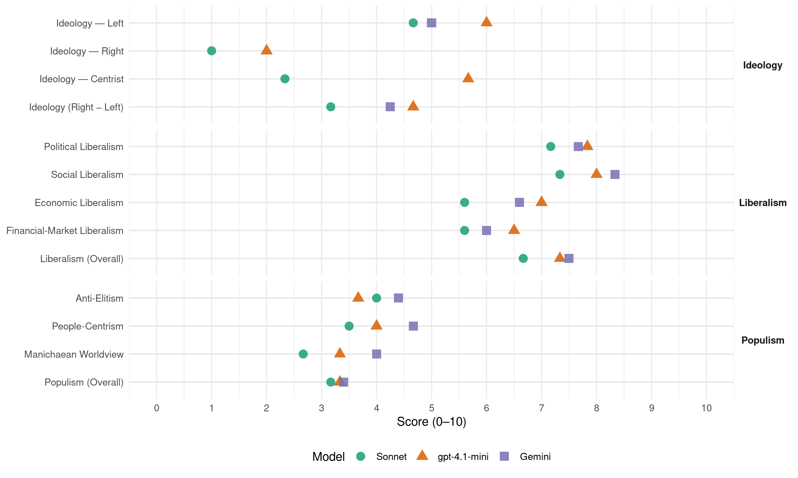

PS (Portugal, 2015)
manifesto_id 35311_201510
Get full text: This site shows derived annotations and short verbatim quotes only. The full manifesto text is © Manifesto Project / WZB — obtain it via manifesto-project.wzb.eu using the manifesto_id above.
Headline scores
| Dimension | Sonnet | gpt-4.1-mini | Gemini |
|---|---|---|---|
| Populism (Overall) | 3.2 | 3.3 | 3.4 |
| Anti-Elitism | 4.0 | 3.7 | 4.4 |
| People-Centrism | 3.5 | 4.0 | 4.7 |
| Manichaean Worldview | 2.7 | 3.3 | 4.0 |
| Ideology (Right − Left) | 3.2 | 4.7 | 4.2 |
| Liberalism (Overall) | 6.7 | 7.3 | 7.5 |
| Political Liberalism | 7.2 | 7.8 | 7.7 |
| Social Liberalism | 7.3 | 8.0 | 8.3 |
| Economic Liberalism | 5.6 | 7.0 | 6.6 |
| Financial-Market Liberalism | 5.6 | 6.5 | 6.0 |
Evidence per dimension
Economic Liberalism
Gemini · score 6.0 · mixed · chunk 1
“assegurar a regulação eficaz dos mercados”
6. FORTALECER, SIMPLIFICAR E DIGITALIZAR A ADMINISTRAÇÃO 347. ASSEGURAR A REGULAÇÃO EFICAZ DOS MERCADOS 368. VALORIZAR A AUTONOMIA DAS REGIÕES AUTÓNOMAS
Gemini · score 7.0 · verified · chunk 2
“fomentar a competitividade e a coesão social”
um acordo tripartido para a legislatura que articule diferentes áreas de política para fomentar a competitividade e a coesão social
Gemini · score 6.0 · verified · chunk 3
“cooperação com os parceiros sociais e os conselhos empresariais”
mercado de trabalho, estabelecendo dinâmicas de cooperação com os parceiros sociais e os conselhos empresariais regionais e potenciando a concertação
Gemini · score 6.0 · verified · chunk 4
“eliminar burocracia, tornando o Estado mais ágil”
Também relativamente ao mar há que eliminar burocracia, tornando o Estado mais ágil e facilitando o exercício de atividades económicas.
Gemini · score 7.0 · verified · chunk 5
“procedimentos obrigatoriamente concorrenciais, mediante concursos públicos”
distribuição de energia elétrica em baixa tensão e à sua renovação através de procedimentos obrigatoriamente concorrenciais, mediante concursos públicos de escala municipal
Gemini · score 7.0 · verified · chunk 6
“eliminação de barreiras ao exercício de transações comerciais”
A criação de um espaço económico da Língua Portuguesa com eliminação de barreiras ao exercício de transações comerciais e ao investimento
gpt-4.1-mini · score 7.0 · verified · chunk 1
“relançar a economia e o emprego”
É preciso, pois, fazer diferente e fazer melhor: virar a página da austeridade e relançar a economia e o emprego. Só assim conseguiremos parar o retrocesso social e retomar o caminho do progresso e da solidariedade, só assim conseguiremos superar a crise orçamental.
gpt-4.1-mini · score 7.0 · verified · chunk 2
“competitividade e coesão social”
Acordo Estratégico de médio prazo que articule políticas económicas, fiscais, de rendimentos, de emprego e de proteção social … que permita: Criar um horizonte de médio prazo, no âmbito da legislatura, de objetivos partilhados e de estabilidade das políticas, introduzindo segurança, previsibilidade e credibilidade nos processos políticos e criando melhores condições para as decisões dos diferentes agentes; Criar uma base de apoio sólida e alargada para medidas nas áreas estratégicas das políticas públicas para a competitividade e coesão social;
gpt-4.1-mini · score 7.0 · verified · chunk 3
“Promover a reabilitação dos edifícios degradados e a reocupação dos edifícios e fogos devolutos”
Promover a reabilitação dos edifícios degradados e a reocupação dos edifícios e fogos devolutos, designadamente aplicando os incentivos e benefícios fiscais à reabilitação a quaisquer territórios urbanos; Associar ao investimento na reabilitação urbana um aumento da resistência sísmica do edificado e uma forte componente de eficiência energética, fomentando a utilização de materiais isolantes e inteligentes, bem como de equipamentos que permitam uma poupança de energia, o aproveitamento solar para efeitos térmicos e/ou a microgeração elétrica, com vista a reduzir a pegada ecológica;
gpt-4.1-mini · score 7.0 · verified · chunk 4
“Apostamos de forma arrojada no conhecimento, na inovação e na conservação do meio marinho como motores do desenvolvimento económico”
O PS assume uma aposta nas atividades económicas tradicionalmente ligadas ao Mar, mas também na procura de novas áreas de excelência e de criação de oportunidades de negócio que levem à geração de emprego qualificado, ao aumento das exportações e à reconversão de áreas em declínio em indústrias marítimas emergentes. Apostamos de forma arrojada no conhecimento, na inovação e na conservação do meio marinho como motores do desenvolvimento económico. Enfrentamos o desafio da simplificação sem facilitismo.
gpt-4.1-mini · score 7.0 · verified · chunk 5
“liberalismo, livre mercado, competitividade das empresas”
O PS volta a dar um papel central à criação de empresas inova-doras e de base tecnológica, estimulando o empreendedorismo e a criação de emprego que permita o pleno aproveitamento do capital humano existente e acompanhando a ambição europeia de construção e execução de uma agenda digital, por forma a prosseguir a transformação digital da economia e da sociedade enquanto desígnio que permita incrementar a competitividade na UE, com criação de empregos.
gpt-4.1-mini · score 7.0 · verified · chunk 6
“O PS não deixará de capacitar e robustecer os instrumentos do Estado dirigidos à projeção internacional do seu potencial económico”
Deste modo, aten-dendo à importância da ação externa no domínio económico – para a promoção do comércio externo e a captação de turismo e investimento –, o PS não deixará de capacitar e robustecer os instrumentos do Estado dirigidos à projeção internacional do seu potencial económico.
Sonnet · score 6.0 · verified · chunk 1
“assegurar a regulação eficaz dos mercados”
É este Estado forte, inteligente e moderno que o PS defende e que deve estar presente para melhorar a qualidade da democracia… para assegurar uma regulação eficaz
Sonnet · score 6.0 · verified · chunk 2
“fomentar a competitividade e a coesão social”
um acordo tripartido para a legislatura que articule diferentes áreas de política para fomentar a competitividade e a coesão social
Sonnet · score 5.0 · verified · chunk 3
“dinamizar o mercado de arrendamento e a reabilitação”
gera a oportunidade dinamizar o mercado de arrendamento e a reabilitação urbana, mas se não for acompanhada das necessárias medidas de política
Sonnet · score 6.0 · mixed · chunk 4
“Estimular uma maior concorrência na comercialização”
Com este objetivo, o PS irá: Estimular uma maior concorrência na comercialização de eletricidade e gás, designadamente fomentando o aparecimento de novos agentes económicos
Sonnet · score 6.0 · verified · chunk 5
“Promover a desverticalização (unbundling) dos mercados energéticos”
Promover a desverticalização (unbundling) dos mercados energéticos, aprofundando as soluções já adotadas nos setores da eletricidade e do gás
Sonnet · score 5.0 · verified · chunk 6
“eliminação de barreiras ao exercício de transações comerciais”
A criação de um espaço económico da Língua Portuguesa com eliminação de barreiras ao exercício de transações comerciais e ao investimento, regras jurídicas comuns
Financial-Market Liberalism
Gemini · score 6.0 · verified · chunk 1
“reforçando o papel do mercado de capitais no financiamento das PME”
Reduzir a dependência de crédito bancário, reforçando o papel do mercado de capitais no financiamento das PME, em especial através de instrumentos de capital
Gemini · score 7.0 · verified · chunk 2
“supervisão do setor financeiro deve, não só assegurar uma fiscalização mais apertada”
Prevenir promiscuidades e outros abusos no setor financeiro A supervisão do setor financeiro deve, não só assegurar uma fiscalização mais apertada das instituições
Gemini · score 5.0 · verified · chunk 3
“concessão de garantias bancárias a empréstimos para obras”
haverá que lançar mão dos seguintes instrumentos: Concessão de garantias bancárias a empréstimos para obras de reabilitação destinadas a arrendamento
Gemini · score 6.0 · verified · chunk 4
“facilitar o acesso ao crédito bancário”
criar instrumentos financeiros para caucionamento mútuo e capital de risco, de modo a alavancar o investimento e facilitar o acesso ao crédito bancário em condições mais vantajosas.
Gemini · score 6.0 · verified · chunk 6
“através de uma efetiva ação junto das instituições europeias e do mercado de capitais”
encontrando formas – designadamente através de uma efetiva ação junto das instituições europeias e do mercado de capitais – de capitalizar, modernizar
gpt-4.1-mini · score 6.0 · verified · chunk 1
“mercado de capitais no financiamento das PME”
Reduzir a dependência de crédito bancário, reforçando o papel do mercado de capitais no financiamento das PME, em especial através de instrumentos de capital (emissão de ações), fundos especializados de dívida privada (emissão de obrigações de PME) ou instrumentos híbridos (equiparados a capital); Promover a aceleração dos processos de reestruturação empresarial e respetiva capitalização,
gpt-4.1-mini · score 7.0 · verified · chunk 2
“reorganizar as funções de regulação e supervisão”
A reorganização das funções de regulação e supervisão dotará estas atividades de maior racionalidade, criando um sistema simultaneamente mais eficaz e com menos sobreposições ou redundâncias, bem como eliminando exigências burocráticas que desfoquem a atividade regulatória relativamente às suas funções essenciais. Esta reorganização deverá passar por um reforço da capacidade de atuação das entidades reguladoras, por uma regulação setorial tendencialmente assente no modelo de regulador único e pela consequente ponderação, necessariamente caso a caso, de movimentos de fusão entre reguladores que atuem sobre a mesma atividade económica.
Sonnet · score 6.0 · verified · chunk 1
“relançamento do Mercado Único de Capitais”
Do mesmo modo, o relançamento do Mercado Único de Capitais poderá vir a ser positivo, se puder determinar menor dependência das empresas em relação ao financiamento bancário
Sonnet · score 6.0 · verified · chunk 2
“supervisão do setor financeiro”
A supervisão do setor financeiro deve, não só assegurar uma fiscalização mais apertada das instituições de crédito, como evitar, à partida, a ocorrência de situações de captura económica
Sonnet · score 5.0 · verified · chunk 3
“Instituição de um Banco Ético, em colaboração”
Instituição de um Banco Ético, em colaboração com o setor solidário e as autarquias interessadas, que possa contribuir para minorar a situação de sobreendividamento das famílias
Sonnet · score 5.0 · mixed · chunk 4
“linhas de crédito dedicadas, com condições especiais”
Serão negociadas com a banca linhas de crédito dedicadas, com condições especiais, a que as ESE poderão recorrer para financiar a instalação dos equipamentos de micro-geração
Sonnet · score 6.0 · verified · chunk 5
“transparência e à concentração da propriedade”
Reforçar o regime jurídico relativo à transparência e à concentração da propriedade, que não deverá por em causa a capacidade competitiva
Sonnet · score 5.0 · verified · chunk 6
“criação de plataformas bancárias pan-Africanas de base Lusófona”
A criação de plataformas bancárias pan-Africanas de base Lusófona; O aprofundamento do potencial das relações económicas Luso-Chinesas e do Fundo para a Cooperação Económica
Political Liberalism
Gemini · score 8.0 · verified · chunk 1
“governo orientou a sua ação contra o espírito e a letra da Constituição”
Por outro lado, o governo orientou a sua ação contra o espírito e a letra da Constituição, pontuando o seu mandato por sucessivas decisões grosseiramente
Gemini · score 8.0 · verified · chunk 2
“rigoroso respeito pelo princípio de separação de poderes”
orientações de política criminal, num quadro de rigoroso respeito pelo princípio de separação de poderes; As condições
Gemini · score 7.0 · verified · chunk 3
“uma cidadania democrática e para o desenvolvimento”
meio imprescindível para a valorização dos cidadãos, para uma cidadania democrática e para o desenvolvimento sustentável do país.
Gemini · score 7.0 · verified · chunk 4
“respeita a autonomia e esfera de competências”
não assegura a devida articulação com os demais instrumentos de planeamento, nem respeita a autonomia e esfera de competências próprias das regiões autónomas.
Gemini · score 8.0 · verified · chunk 5
“Cultura como um pilar essencial da Democracia”
O PS vê a Cultura como um pilar essencial da Democracia, da identidade nacional, da inovação e do
Gemini · score 8.0 · verified · chunk 6
“defesa dos valores democráticos e dos direitos humanos”
Portugal deve ter como traves-mestras da sua política externa a defesa dos valores democráticos e dos direitos humanos
gpt-4.1-mini · score 8.0 · verified · chunk 1
“melhorar a qualidade da democracia”
IV UM ESTADO FORTE, INTELIGENTE E MODERNO O governo PSD/CDS revelou um constante preconceito em relação ao Estado e ao setor público, preferindo a via da privatização, da redução dos serviços públicos estratégicos e centrais do Estado e da diminuição da sua massa crítica e dos seus quadros. Tal resulta de uma visão do papel do setor público assente no preconceito de que os privados são mais competentes e eficazes do que o Estado. O PS tem uma visão diferente. Casos recentes demonstraram que o Estado não pode alienar a sua função essencial e estratégica em vários domínios, sob pena de o País poder perder importantes ativos. Com efeito, as situações recentes relacionadas com instituições do setor financeiro e das telecomunicações demonstraram bem que o setor privado nem sempre proporciona um melhor serviço e uma melhor opção para os interesses do País. Além disto, o PS já demonstrou com o SIMPLEX que o Estado pode ser ágil e eficaz, prestando melhores serviços aos cidadãos e às empresas. O PS defende, pois, um Estado forte, que não aliene as suas funções e que esteja presente nas áreas estratégicas para o interesse público. Mas esse Estado tem simultaneamente de ser inteligente e moderno. Um Estado forte não significa um setor público com excesso de dimensão ou de funcionários. Pelo contrário, a sua maior capacidade de intervenção e mudança tem de resultar da sua agilidade e não do número de departamentos ou dirigentes. Finalmente, um Estado forte tem de ser moderno, ou seja, apto a proporcionar serviços e soluções inovadoras, através de métodos digitais e simplificados, sem custos de contexto e focando a sua intervenção nas necessidades dos cidadãos. É este Estado forte, inteligente e moderno que o PS defende e que deve estar presente para melhorar a qualidade da democracia, na Defesa Nacional, para assegurar a liberdade e a segurança, para agilizar a justiça, para assegurar uma regulação eficaz e para valorizar as regiões autónomas. Igualmente, um Estado forte, inteligente e moderno exige uma nova forma de governar, uma ação decisiva em favor da descentralização, de procedimentos simplificados, de inovação e de digitalização. 1. MELHORAR A QUALIDADE DA DEMOCRACIA Existe, hoje, na sociedade portuguesa, uma quebra de confiança dos cidadãos relativamente à política, às instituições democráticas e aos seus responsáveis. O PS reconhece a necessidade e a urgência de inverter esta tendência e, por isso, atuará, de forma decisiva, em cinco áreas-chave: Na valorização da democracia representativa, começando pela reforma do sistema eleitoral, à qual se associam medidas para alargar e facilitar o exercício do direito de voto; No desenvolvimento de novos direitos de participação pelo cidadão, como através de um programa de perguntas diretas ao governo da República, bem como na valorização de mecanismos já existentes, como o direito de petição; Na prevenção e combate à corrupção através de maior transparência, escrutínio democrático e controlo da legalidade; Na intervenção mais direta dos cidadãos junto do Tribunal Constitucional; No reforço da tutela de direitos fundamentais que, em virtude das ferramentas da sociedade de informação, podem hoje ser postos em causa de novas formas. Reformar o sistema eleitoral e adotar mecanismos que ampliem e estimulem a participação democrática O PS está ciente da necessidade de aproximar os eleitores dos eleitos e de alargar e facilitar o exercício do direito de voto. Para esse efeito irá adotar as seguintes medidas: Reformar o sistema eleitoral para a Assembleia da República, introduzindo círculos uninominais, sem prejuízo da adoção de mecanismos que garantam a proporcionalidde da representação partidária, promovendo o reforço da personalização dos mandatos e da responsabilização dos eleitos, sem qualquer prejuízo do pluralismo; Alargar a possibilidade de voto antecipado, ampliando o elenco das profissões e das situações em que se aplica; Criar condições para o exercício do direito de voto em qualquer ponto do País, independentemente da área de residência, sempre no respeito pelo princípio da verificação presencial da identidade. Reforçar os mecanismos de participação cívica, defesa dos direitos fundamentais e escrutínio das instituições públicas A maturidade da nossa democracia depende decisivamente da disponibilização, aos cidadãos, de meios eficazes e céleres para fazer valer os seus direitos e obter os esclarecimentos que julgue necessários junto das instituições públicas. Com este propósito, o PS tomará as seguintes medidas: A adoção de um Orçamento Participativo a nível do Orçamento do Estado, prevendo-se a afetação de uma verba anual determinada a projetos propostos e escolhidos pelos cidadãos a financiar e realizar em certas áreas do Governo e da Administração Estadual, dando prioridade a medidas promotoras da qualidade de vida; A introdução de consequências efetivas por ausência de resposta à petição de interesse geral à Assembleia da República enviada pelo Parlamento ao governo; A adoção da possibilidade de os cidadãos estrangeiros residentes em Portugal, também, poderem apresentar petições aos órgãos de soberania; A criação de meios que permitam o acompanhamento dos processos associados às petições e que facilitem o acesso a informação completa sobre o exercício deste direito, nomeadamente através de um sítio na Internet que funcione como «balcão do peticionário»; O desenvolvimento de um projeto de “Perguntas Cidadãs ao governo” como forma de facilitar o contacto entre o governo, a Administração Pública e os cidadãos, oferecendo a qualquer cidadão a possibilidade de submeter qualquer pergunta ao gover- no ou à Administração Pública, cabendo a uma entidade pública designada assegurar, em ligação com as entidades relevantes, o respetivo esclarecimento em prazo razoável; A dinamização de mecanismos de auscultação permanente dos movimentos sociais e do cidadão, através dos quais o Parlamento e o governo os possam contactar e auscultar com regularidade; A introdução de benefícios para as entidades patronais que criem condições para a participação cívica dos seus colaboradores; A avaliação anual do cumprimento das promessas presentes no programa de governo, com a participação de um grupo de cidadãos escolhidos aleatoriamente de entre eleitores que se pré-inscrevam; O reforço da temática de Educação para a Cidadania nos currículos escolares. Reforçar a tutela dos direitos fundamentais O direito à proteção de dados pessoais, tal como está consagrado na Constituição, enfrenta hoje novos riscos resultantes da enorme capacidade de recolha e processamento de dados que os meios informáticos permitem. O PS reconhece o imperativo de atualizar o quadro legislativo que protege a identidade informacional, nomeadamente o direito à veracidade e à retificação de informação, o direito ao esquecimento, o direito à proteção do bom nome e a proteção contra a apropriação de identidade. Assim, o PS irá: Criar mecanismos de monitorização e avaliação dos sistemas eletrónicos, públicos e privados, de registo e arquivamento de dados pessoais, garantindo a existência de plataformas de gestão dos pedidos relacionados com o direito ao esquecimento e da reserva da intimidade da vida privada e do bom nome; Criar mecanismos rápidos e expeditos para reagir e obter compensações face à violação dos direitos ao esquecimento, reserva da intimidade da vida privada e do bom nome. Tornar mais acessível a Justiça Constitucional e a defesa dos fireitos fundamentais e da Constituição no Tribunal Constitucional A defesa dos direitos fundamentais e da Constituição passa pelo desempenho efetivo do papel do Tribunal Constitucional, pelo acesso ao mesmo sem exigências formais e custos desproporcionados e pela emissão de decisões rápidas. Para isso, o PS irá: Estabelecer prazos máximos de decisão em sede de fiscalização sucessiva abstrata da constitucionalidade, pois a sua ausência tem originado uma grande imprevisibilidade nos prazos de decisão; Criar a figura do Assistente Constitucional, que goze de um estatuto de amicuscuriae, que integre, designadamente, o poder de juntar aos autos requerimentos, documentos, dados oficiais e estatísticas, bem como pareceres jurídicos ou técnicos, mesmo nos casos em que o processo de fiscalização abstrata, preventiva ou sucessiva, não decorra de sua iniciativa; Regular as condições em que as entidades com legitimidade constitucional para suscitarem a fiscalização abstracta sucessiva da constitucionalidade têm de apreciar as solicitações que lhes são dirigidas por municípios ou por cidadãos ao abrigo do direito de petição. Aumentar a exigência e valorizar a atividade política e o exercício de cargos públicos A aparência da suscetibilidade dos detentores de cargos públicos a interesses alheios às funções que desempenham tem contribuído para minar a confiança dos cidadãos nas instituições. O PS promoverá o incremento da transparência no exercício de cargos públicos, a adoção de medidas que contribuam para o incremento dos níveis de independência e de imparcialidade e também iniciativas que permitam valorizar a atividade política e o exercício de cargos públicos. Para isso, o PS defende designadamente o seguinte: A adoção de um Código da Transparência Pública, a que estarão sujeitos, nomeadamente, os titulares dos cargos políticos, os gestores públicos, os titulares de órgãos, funcionários e trabalhadores da Administração Pública, que regule, entre outros aspetos, a aceitação de presentes e de “hospitalidade” disponibilizada gratuitamente por entidades privadas (convites para a participação em congressos ou conferências); A regulação da atividade das organizações privadas que pretendem participar na definição e execução de políticas públicas, conhecida como lobbying; A criação de um registo público de interesses nas autarquias locais, aproximando o seu regime do que já hoje está consagrado para os deputados e membros do governo; A proibição de aceitação de mandato judicial, nas ações a favor ou contra o Estado ou quaisquer outros entes públicos, para os deputados que exerçam advocacia.
gpt-4.1-mini · score 8.0 · verified · chunk 2
“democracia, direitos, eleições, tribunais, parlamento”
O PS reconhece que os cidadãos e as empresas não estão satisfeitos com o serviço público de justiça que têm. Essa insatisfação resulta, essencialmente, do facto de considerarem a resposta judicial excessivamente lenta, responsabilizando o congestionamento dos tribunais por esse facto. Por seu turno, os atores judiciários afirmam, reiteradamente, que esse congestionamento resulta da procura crescente, associada à falta de meios.
gpt-4.1-mini · score 8.0 · verified · chunk 3
“O SNS deve ouvir mais os seus utilizadores e organizar-se de acordo com as preferências destes”
O SNS deve ouvir mais os seus utilizadores e organizar-se de acordo com as preferências destes, focando-se na qualidade do serviço, promovendo disponibilidade, acessibilidade, comodidade, celeridade e humanização. Deve fazê-lo indo ao seu encontro na família, na escola, no trabalho, na comunidade, na cultura e no lazer, criando um ambiente favorável à promoção e defesa da saúde.
gpt-4.1-mini · score 7.0 · verified · chunk 4
“Reforçar o papel e a autonomia dos municípios em matéria de ordenamento de território e de desenvolvimento local”
Reforçar o papel e a autonomia dos municípios em matéria de ordenamento de território e de desenvolvimento local, designa-damente mediante o reforço dos instrumentos de concertação, consulta e audição dos municípios face às implicações locais dos programas da Administração Central e o reforço da autonomia dos municípios em sede de elaboração dos planos de urbaniza-ção e de pormenor;
gpt-4.1-mini · score 8.0 · verified · chunk 5
“garantia do imperativo constitucional de acesso democrático”
O PS vê a Cultura como um pilar essencial da Democracia, da identidade nacional, da inovação e do desenvolvimento sustenta-do. A garantia do imperativo constitucional de acesso democrático à criação e fruição culturais , a preservação, expansão e divulgação do nosso património material e imaterial e a assunção da Cultura como fator essencial de inovação, qualificação e competitividade da nossa economia são aspetos fundamentais da ação do governo do PS.
gpt-4.1-mini · score 8.0 · verified · chunk 6
“Portugal soube também, ao longo de muitos anos, projetar uma filosofia clara na ordem internacional, promotora da paz, defensora dos Diretos Humanos, da Democracia e do Estado de Direito”
Portugal soube também, ao longo de muitos anos, projetar uma filosofia clara na ordem internacional, promotora da paz, defensora dos Diretos Humanos, da Democracia e do Estado de Direito, a par com uma atitude consentânea no âmbito das políticas de cooperação e de-senvolvimento.
Sonnet · score 7.0 · verified · chunk 1
“melhorar a qualidade da democracia”
É este Estado forte, inteligente e moderno que o PS defende e que deve estar presente para melhorar a qualidade da democracia, na Defesa Nacional
Sonnet · score 8.0 · verified · chunk 2
“separação de poderes”
O cumprimento integral das obrigações legais de manter atualizadas as orientações de política criminal, num quadro de rigoroso respeito pelo princípio de separação de poderes
Sonnet · score 7.0 · verified · chunk 3
“uma cidadania democrática e para o desenvolvimento”
A aposta na qualificação dos portugueses constitui um meio imprescindível para a valorização dos cidadãos, para uma cidadania democrática e para o desenvolvimento sustentável do país
Sonnet · score 6.0 · verified · chunk 4
“diálogo político com outras forças partidárias”
assente no diálogo político com outras forças partidárias e atores sociais relevantes, o PS proporá um plano de aumento da capacidade das infraestruturas portuárias
Sonnet · score 7.0 · verified · chunk 5
“O PS vê a Cultura como um pilar essencial da Democracia”
O PS vê a Cultura como um pilar essencial da Democracia, da identidade nacional, da inovação e do desenvolvimento sustentado
Sonnet · score 8.0 · verified · chunk 6
“defesa dos valores democráticos e dos direitos humanos”
Portugal deve ter como traves-mestras da sua política externa a defesa dos valores democráticos e dos direitos humanos, o combate ao terrorismo e aos conflitos armados
Liberalism (Overall)
Gemini · score 7.0 · verified · chunk 1
“governo orientou a sua ação contra o espírito e a letra da Constituição”
Por outro lado, o governo orientou a sua ação contra o espírito e a letra da Constituição, pontuando o seu mandato por sucessivas decisões grosseiramente
Gemini · score 8.0 · verified · chunk 2
“rigoroso respeito pelo princípio de separação de poderes”
orientações de política criminal, num quadro de rigoroso respeito pelo princípio de separação de poderes; As condições
Gemini · score 7.0 · verified · chunk 3
“uma cidadania democrática e para o desenvolvimento”
meio imprescindível para a valorização dos cidadãos, para uma cidadania democrática e para o desenvolvimento sustentável do país.
Gemini · score 7.0 · verified · chunk 4
“eliminar burocracia, tornando o Estado mais ágil”
Também relativamente ao mar há que eliminar burocracia, tornando o Estado mais ágil e facilitando o exercício de atividades económicas.
Gemini · score 8.0 · verified · chunk 5
“igualdade e da não discriminação”
A promoção da igualdade e da não discriminação é um imperativo ético, jurídico e constitucional
Gemini · score 8.0 · verified · chunk 6
“defesa dos valores democráticos e dos direitos humanos”
Portugal deve ter como traves-mestras da sua política externa a defesa dos valores democráticos e dos direitos humanos
gpt-4.1-mini · score 7.0 · verified · chunk 1
“virar a página da austeridade e relançar a economia e o emprego”
É preciso, pois, fazer diferente e fazer melhor: virar a página da austeridade e relançar a economia e o emprego. Só assim conseguiremos parar o retrocesso social e retomar o caminho do progresso e da solidariedade, só assim conseguiremos superar a crise orçamental.
gpt-4.1-mini · score 7.0 · verified · chunk 2
“reorganizar as funções de regulação e supervisão”
A reorganização das funções de regulação e supervisão dotará estas atividades de maior racionalidade, criando um sistema simultaneamente mais eficaz e com menos sobreposições ou redundâncias, bem como eliminando exigências burocráticas que desfoquem a atividade regulatória relativamente às suas funções essenciais. Esta reorganização deverá passar por um reforço da capacidade de atuação das entidades reguladoras, por uma regulação setorial tendencialmente assente no modelo de regulador único e pela consequente ponderação, necessariamente caso a caso, de movimentos de fusão entre reguladores que atuem sobre a mesma atividade económica.
gpt-4.1-mini · score 7.0 · verified · chunk 3
“O SNS deve ouvir mais os seus utilizadores e organizar-se de acordo com as preferências destes”
O SNS deve ouvir mais os seus utilizadores e organizar-se de acordo com as preferências destes, focando-se na qualidade do serviço, promovendo disponibilidade, acessibilidade, comodidade, celeridade e humanização. Deve fazê-lo indo ao seu encontro na família, na escola, no trabalho, na comunidade, na cultura e no lazer, criando um ambiente favorável à promoção e defesa da saúde.
gpt-4.1-mini · score 7.0 · verified · chunk 4
“Apostamos de forma arrojada no conhecimento, na inovação e na conservação do meio marinho como motores do desenvolvimento económico”
O PS assume uma aposta nas atividades económicas tradicionalmente ligadas ao Mar, mas também na procura de novas áreas de excelência e de criação de oportunidades de negócio que levem à geração de emprego qualificado, ao aumento das exportações e à reconversão de áreas em declínio em indústrias marítimas emergentes. Apostamos de forma arrojada no conhecimento, na inovação e na conservação do meio marinho como motores do desenvolvimento económico. Enfrentamos o desafio da simplificação sem facilitismo.
gpt-4.1-mini · score 8.0 · verified · chunk 5
“garantia do imperativo constitucional de acesso democrático”
O PS vê a Cultura como um pilar essencial da Democracia, da identidade nacional, da inovação e do desenvolvimento sustenta-do. A garantia do imperativo constitucional de acesso democrático à criação e fruição culturais , a preservação, expansão e divulgação do nosso património material e imaterial e a assunção da Cultura como fator essencial de inovação, qualificação e competitividade da nossa economia são aspetos fundamentais da ação do governo do PS.
gpt-4.1-mini · score 8.0 · verified · chunk 6
“Portugal soube também, ao longo de muitos anos, projetar uma filosofia clara na ordem internacional, promotora da paz, defensora dos Diretos Humanos, da Democracia e do Estado de Direito”
Portugal soube também, ao longo de muitos anos, projetar uma filosofia clara na ordem internacional, promotora da paz, defensora dos Diretos Humanos, da Democracia e do Estado de Direito, a par com uma atitude consentânea no âmbito das políticas de cooperação e de-senvolvimento.
Sonnet · score 7.0 · verified · chunk 1
“reforço da legitimidade democrática da Comissão Europeia”
Há também passos importantes no reforço da legitimidade democrática da Comissão Europeia e dos poderes e competência do Parlamento Europeu que importa continuar
Sonnet · score 7.0 · verified · chunk 2
“independência dos reguladores e supervisores”
A independência dos reguladores e supervisores face aos setores regulados é fulcral para um exercício eficaz e transparente das respetivas funções.
Sonnet · score 6.0 · verified · chunk 3
“igualdade de acesso de todas as crianças”
A nossa política educativa garantirá a igualdade de acesso de todas as crianças à escola pública e promoverá o sucesso educativo de todos
Sonnet · score 6.0 · verified · chunk 4
“Estimular uma maior concorrência na comercialização”
Com este objetivo, o PS irá: Estimular uma maior concorrência na comercialização de eletricidade e gás, designadamente fomentando o aparecimento de novos agentes económicos
Sonnet · score 7.0 · verified · chunk 5
“promoção da igualdade e da não discriminação”
A promoção da igualdade e da não discriminação é um imperativo ético, jurídico e constitucional na defesa e garantia dos direitos fundamentais
Sonnet · score 7.0 · verified · chunk 6
“discriminação em função da orientação sexual”
Combater a discriminação em função da orientação sexual A última década foi determinante na implementação de uma agenda de proteção e promoção dos direitos fundamentais
Anti-Elitism
Gemini · score 8.0 · verified · chunk 1
“coligação de direita repousa sobre uma enorme burla política”
Primeiro, a avaliação. Desde logo, todo o mandato do governo da coligação de direita repousa sobre uma enorme burla política. Na campanha eleitoral de 2011, Passos Coelho prometeu
Gemini · score 3.0 · verified · chunk 2
“descrédito provocado pela coligação de direita”
Depois de quatro anos de descrédito provocado pela coligação de direita, pelo desrespeito
Gemini · score 4.0 · verified · chunk 3
“governo PSD/CDS levou o SNS a gastar pior”
desigualdades que durante séculos nos marcaram. O governo PSD/CDS levou o SNS a gastar pior os recursos escassos e a gerou graves problemas
Gemini · score 4.0 · verified · chunk 5
“governo PSD/CDS travou a fundo”
Por puro preconceito político, o governo PSD/CDS travou a fundo o projeto da mobilidade elétrica, inviabilizando
Gemini · score 3.0 · verified · chunk 6
“governo PSD/CDS reduziu drasticamente a proteção”
Desde 2011 o governo PSD/CDS reduziu drasticamente a proteção social destinada aos idosos
gpt-4.1-mini · score 3.0 · verified · chunk 1
“burla política”
todo o mandato do governo da coligação de direita repousa sobre uma enorme burla política. Na campanha eleitoral de 2011, Passos Coelho prometeu solenemente não aumentar impostos e não cortar salários e pensões.
gpt-4.1-mini · score 4.0 · verified · chunk 2
“descrédito provocado pela coligação de direita”
Acordo Estratégico de médio prazo que articule políticas económicas, fiscais, de rendimentos, de emprego e de proteção social Depois de quatro anos de descrédito provocado pela coligação de direita, pelo desrespeito reiterado pelos parceiros sociais, é fundamental restabelecer a autonomia e a dignidade da concertação social e restabelecer a confiança das partes no diálogo social, minada pelo modo como foram conduzidos os processos negociais nesta sede nos últimos anos.
gpt-4.1-mini · score 4.0 · verified · chunk 3
“O governo PSD/CDS levou o SNS a gastar pior os recursos escassos”
O Serviço Nacional de Saúde é a grande conquista do Estado Social no nosso País. Gerou ganhos em saúde que nos colocaram ao nível do resto da Europa, prolongou a vida e a sua qualidade a milhões de portugueses e reduziu muitas das desigualdades que durante séculos nos marcaram. O governo PSD/CDS levou o SNS a gastar pior os recursos escassos e a gerou graves problemas e desigualdades no acesso, tendo-lhe faltado visão estratégica e capacidade para executar as reformas organizativas indispensáveis.
Sonnet · score 6.0 · verified · chunk 1
“uma enorme burla política”
todo o mandato do governo da coligação de direita repousa sobre uma enorme burla política. Na campanha eleitoral de 2011, Passos Coelho prometeu solenemente não aumentar impostos
Sonnet · score 4.0 · verified · chunk 2
“quatro anos de descrédito provocado pela coligação de direita”
Depois de quatro anos de descrédito provocado pela coligação de direita, pelo desrespeito reiterado pelos parceiros sociais
Sonnet · score 3.0 · verified · chunk 3
“governo PSD/CDS levou o SNS a gastar pior”
O governo PSD/CDS levou o SNS a gastar pior os recursos escassos e a gerou graves problemas e desigualdades no acesso
Sonnet · score 2.0 · mixed · chunk 4
“política do governo PSD-CDS, manifestamente hostil”
Ao contrário da ideia recorrentemente propalada… a política do governo PSD-CDS, manifestamente hostil às energias renováveis, não conduziu a um abaixamento do preço da eletricidade
Sonnet · score 4.0 · verified · chunk 5
“governo PSD/CDS rompeu o amplo compromisso social”
este percurso foi interrompido em 2011, quando o governo PSD/CDS rompeu o amplo compromisso social e político com a ciência
Sonnet · score 3.0 · verified · chunk 6
“governo PSD/CDS reduziu drasticamente a proteção social”
Desde 2011 o governo PSD/CDS reduziu drasticamente a proteção social destinada aos idosos e, contrariamente ao seu discurso, não protegeu os idosos mais pobres.
Ideology — Centrist
gpt-4.1-mini · score 6.0 · verified · chunk 1
“representar politicamente essa grande maioria social”
Só com um novo governo e uma nova maioria parlamentar é que Portugal pode beneficiar de políticas diferentes e melhores. Esse é o propósito do Partido Socialista : representar politicamente essa grande maioria social e cumprir o seu dever junto de todos os portugueses,
gpt-4.1-mini · score 6.0 · verified · chunk 2
“recolocar as pessoas no centro das políticas públicas”
As 21 causas que a seguir se propõem aos portugueses correspondem a um caminho alternativo, bem diferente das políticas do governo do coligação de direita, organizada em torno de cinco pilares: recolocar as pessoas no centro das políticas públicas, valorizar o nosso território, conferir prioridade à inovação, prosseguir maior coesão e menores desigualdades e afirmar Portugal à escala global.
gpt-4.1-mini · score 5.0 · verified · chunk 3
“O SNS só poderá ser amigável se a sua administração for simplificada”
O SNS só poderá ser amigável se a sua administração for simplificada e modernizada através da criação de um SIMPLEX da Saúde que torne transparente, informada e acolhedora a circulação do utente nos diversos níveis do sistema. Temos que repor o equilíbrio famílias-Estado no financiamento da Saúde.
Sonnet · score 3.0 · verified · chunk 1
“representar politicamente essa grande maioria social”
Esse é o propósito do Partido Socialista: representar politicamente essa grande maioria social e cumprir o seu dever junto de todos os portugueses
Sonnet · score 3.0 · verified · chunk 2
“cidadãos e as empresas não estão satisfeitos”
O PS reconhece que os cidadãos e as empresas não estão satisfeitos com o serviço público de justiça que têm.
Sonnet · score 2.0 · verified · chunk 3
“consenso alargado e torno das estratégias”
Partir do conhecimento sobre o fenómeno, das melhores práticas nacionais e internacionais e assim permitir um consenso alargado e torno das estratégias a seguir
Sonnet · score 2.0 · verified · chunk 4
“em benefício dos cidadãos”
urge corrigir, em benefício dos cidadãos. Como tal, o PS irá: Travar o processo de privatização da EGF
Sonnet · score 2.0 · verified · chunk 5
“parceiros sociais em sede de Concertação Social”
escrutinada não apenas pelos partidos no Parlamento mas também pelos parceiros sociais em sede de Concertação Social
Sonnet · score 2.0 · verified · chunk 6
“promoção da igualdade e da não discriminação”
A promoção da igualdade e da não discriminação é um imperativo ético, jurídico e constitucional na defesa e garantia dos direitos fundamentais.
Ideology — Left
Gemini · score 8.0 · verified · chunk 1
“contra os interesses dos trabalhadores, das famílias, das classes médias”
procurou mudar a relação de forças em Portugal, contra os interesses dos trabalhadores, das famílias, das classes médias e dos mais pobres. Quando a direita diz que
Gemini · score 4.0 · verified · chunk 2
“rejeitando a lógica dos cortes cegos”
utilização e gestão dos recursos por parte das administrações públicas. Rejeitando a lógica dos cortes cegos, as decisões
Gemini · score 4.0 · verified · chunk 3
“combate à pobreza, das condições de habitação”
fundamentais as políticas de combate à pobreza, das condições de habitação, do emprego e do trabalho, da alimentação, transportes
Gemini · score 4.0 · verified · chunk 6
“reduzir a proteção aos idosos mais desfavorecidos”
Torna-se claro que este governo optou por reduzir a proteção aos idosos mais desfavorecidos e aos mais dependentes
gpt-4.1-mini · score 7.0 · verified · chunk 1
“combater a pobreza”
D. MAIS COESÃO, MENOS DESIGUALDADES 7816. GARANTIR A SUSTENTABILIDADE DA SEGURANÇA SOCIAL 7817. MELHOR JUSTIÇA FISCAL 8018. COMBATER A POBREZA 8119. CONSTRUIR UMA SOCIEDADE MAIS IGUAL 83E. UM PORTUGAL GLOBAL 85
gpt-4.1-mini · score 5.0 · verified · chunk 2
“fomentar a competitividade e a coesão social”
Acordo Estratégico de médio prazo que articule políticas económicas, fiscais, de rendimentos, de emprego e de proteção social … que permita: Criar um horizonte de médio prazo, no âmbito da legislatura, de objetivos partilhados e de estabilidade das políticas, introduzindo segurança, previsibilidade e credibilidade nos processos políticos e criando melhores condições para as decisões dos diferentes agentes; Criar uma base de apoio sólida e alargada para medidas nas áreas estratégicas das políticas públicas para a competitividade e coesão social;
gpt-4.1-mini · score 6.0 · verified · chunk 3
“O Serviço Nacional de Saúde é a grande conquista do Estado Social no nosso País”
O Serviço Nacional de Saúde é a grande conquista do Estado Social no nosso País. Gerou ganhos em saúde que nos colocaram ao nível do resto da Europa, prolongou a vida e a sua qualidade a milhões de portugueses e reduziu muitas das desigualdades que durante séculos nos marcaram.
Sonnet · score 6.0 · verified · chunk 1
“combater a precariedade e reforçar a dignificação do trabalho”
Com o objetivo de combater a precariedade e reforçar a dignificação do trabalho, o PS defende:
Sonnet · score 4.0 · verified · chunk 2
“prosseguir mais coesão e menos desigualdades”
Para o PS, prosseguir mais coesão e menos desigualdades batemo-nos pelas seguintes causas: Garantir a sustentabilidade da Segurança Social; Melhor justiça fiscal; Combater a pobreza
Sonnet · score 5.0 · verified · chunk 3
“combater a pobreza, as desigualdades e o abandono escolar”
mobilizar a Ação Social Escolar para melhorar e aprofundar os apoios às crianças e jovens em situações de maior fragilidade social e económica, contribuindo ativamente para combater a pobreza, as desigualdades e o abandono escolar
Sonnet · score 3.0 · verified · chunk 4
“Travar o processo de privatização da EGF”
o PS irá: Travar o processo de privatização da EGF, com fundamento na respetiva ilegalidade e desde que tal não implique o pagamento de indemnizações
Sonnet · score 5.0 · verified · chunk 5
“combate à pobreza e à exclusão social”
implementar uma estratégia de combate à pobreza e à exclusão social, de implementar políticas que promovam o emprego
Sonnet · score 5.0 · verified · chunk 6
“Repor os níveis de proteção às famílias em situação de pobreza extrema”
Repor os níveis de proteção às famílias em situação de pobreza extrema existentes até 2010 de modo a reintroduzir de forma consistente, níveis de cobertura adequados
Ideology (Right − Left)
Gemini · score 8.0 · verified · chunk 1
“contra os interesses dos trabalhadores, das famílias, das classes médias”
procurou mudar a relação de forças em Portugal, contra os interesses dos trabalhadores, das famílias, das classes médias e dos mais pobres. Quando a direita diz que
Gemini · score 3.0 · verified · chunk 2
“rejeitando a lógica dos cortes cegos”
utilização e gestão dos recursos por parte das administrações públicas. Rejeitando a lógica dos cortes cegos, as decisões
Gemini · score 3.0 · verified · chunk 3
“combate à pobreza, das condições de habitação”
fundamentais as políticas de combate à pobreza, das condições de habitação, do emprego e do trabalho, da alimentação, transportes
Gemini · score 3.0 · verified · chunk 6
“reduzir a proteção aos idosos mais desfavorecidos”
Torna-se claro que este governo optou por reduzir a proteção aos idosos mais desfavorecidos e aos mais dependentes
gpt-4.1-mini · score 5.0 · verified · chunk 1
“representar politicamente essa grande maioria social”
Só com um novo governo e uma nova maioria parlamentar é que Portugal pode beneficiar de políticas diferentes e melhores. Esse é o propósito do Partido Socialista : representar politicamente essa grande maioria social e cumprir o seu dever junto de todos os portugueses,
gpt-4.1-mini · score 4.0 · verified · chunk 2
“descrédito provocado pela coligação de direita”
Acordo Estratégico de médio prazo que articule políticas económicas, fiscais, de rendimentos, de emprego e de proteção social Depois de quatro anos de descrédito provocado pela coligação de direita, pelo desrespeito reiterado pelos parceiros sociais, é fundamental restabelecer a autonomia e a dignidade da concertação social e restabelecer a confiança das partes no diálogo social, minada pelo modo como foram conduzidos os processos negociais nesta sede nos últimos anos.
gpt-4.1-mini · score 5.0 · verified · chunk 3
“O Serviço Nacional de Saúde é a grande conquista do Estado Social no nosso País”
O Serviço Nacional de Saúde é a grande conquista do Estado Social no nosso País. Gerou ganhos em saúde que nos colocaram ao nível do resto da Europa, prolongou a vida e a sua qualidade a milhões de portugueses e reduziu muitas das desigualdades que durante séculos nos marcaram.
Sonnet · score 5.0 · verified · chunk 1
“contra os interesses dos trabalhadores, das famílias”
procurou mudar a relação de forças em Portugal, contra os interesses dos trabalhadores, das famílias, das classes médias e dos mais pobres.
Sonnet · score 3.0 · verified · chunk 2
“coligação de direita e as consequências da intervenção da troika”
inverter os efeitos negativos das políticas de austeridade do governo da coligação de direita e as consequências da intervenção da troika
Sonnet · score 3.0 · verified · chunk 3
“combater a pobreza, as desigualdades e o abandono escolar”
contribuindo ativamente para combater a pobreza, as desigualdades e o abandono escolar no âmbito de cada escola e de cada agrupamento
Sonnet · score 2.0 · verified · chunk 4
“Travar o processo de privatização da EGF”
o PS irá: Travar o processo de privatização da EGF, com fundamento na respetiva ilegalidade
Sonnet · score 3.0 · verified · chunk 5
“combate à pobreza e à exclusão social”
implementar uma estratégia de combate à pobreza e à exclusão social, de implementar políticas que promovam o emprego
Sonnet · score 3.0 · verified · chunk 6
“Repor os níveis de proteção às famílias em situação de pobreza extrema”
Repor os níveis de proteção às famílias em situação de pobreza extrema existentes até 2010 de modo a reintroduzir de forma consistente, níveis de cobertura adequados
Ideology — Right
gpt-4.1-mini · score 2.0 · verified · chunk 1
“recusar todas as propostas nacionalistas e xenófobas”
a liberdade de circulação no espaço não pode ser colocada em causa sob nenhum pretexto, seja ele de ordem económica, política e de segurança, como também devem ser recusadas todas as propostas nacionalistas e xenófobas que pretendem ameaçar este direito,
Sonnet · score 1.0 · verified · chunk 1
“liberdade de circulação no espaço não pode ser colocada em causa”
a liberdade de circulação no espaço não pode ser colocada em causa sob nenhum pretexto, seja ele de ordem económica, política e de segurança
Sonnet · score 1.0 · verified · chunk 2
“Portugal é uma fronteira externa da União Europeia”
Tendo em consideração que Portugal é uma fronteira externa da União Europeia, a afirmação de uma política de controlos de fronteiras baseada no princípio da solidariedade
Sonnet · score 1.0 · verified · chunk 3
“atração de imigrantes, da legalidade da imigração”
cujas políticas terão como objetivos fundamentais a atração de imigrantes, da legalidade da imigração, o desenvolvimento de uma sociedade intercultural
Sonnet · score 1.0 · verified · chunk 4
“afirmar a nossa soberania e reforça a posição”
ao mesmo tempo que afirma a nossa soberania e reforça a posição de Portugal no Mundo, tirando partido da sua centralidade euro-atlântica
Sonnet · score 1.0 · verified · chunk 6
“identidade nacional é, em primeira instância, europeia, lusófona”
Sendo que a identidade nacional é, em primeira instância, europeia, lusófona, ibero-americana e atlântica, Portugal deve privilegiar nas suas relações externas
Manichaean Worldview
Gemini · score 7.0 · verified · chunk 1
“fanatismo ideológico e deste desprezo pelo interesse nacional”
Os resultados desta burla política, deste fanatismo ideológico e deste desprezo pelo interesse nacional estão à vista de todos. Quatro anos da política
Gemini · score 2.0 · verified · chunk 2
“preconceito ideológico e a má gestão”
hospitais. O preconceito ideológico e a má gestão têm afetado consideravelmente
Gemini · score 3.0 · verified · chunk 6
“O ataque ideológico a que esta prestação”
Além disso, os programas de inserção foram-se descaracterizando. O ataque ideológico a que esta prestação tem sido sujeita
gpt-4.1-mini · score 4.0 · verified · chunk 1
“fanatismo ideológico e deste desprezo pelo interesse nacional”
Os resultados desta burla política, deste fanatismo ideológico e deste desprezo pelo interesse nacional estão à vista de todos. Quatro anos da política de “ir além da troika”.
gpt-4.1-mini · score 3.0 · verified · chunk 2
“preconceito ideológico e a má gestão”
O preconceito ideológico e a má gestão têm afetado consideravelmente a implementação de soluções orgânicas significativamente mais baratas. A título de exemplo, a política atual de contratação de médicos tarefeiros através de empresas especializadas, não só significa um custo absolutamente exorbitante, como a qualificação e empenhamento dos médicos contratados é claramente menor.
gpt-4.1-mini · score 3.0 · verified · chunk 3
“O colapso sentido no acesso às urgências é a marca mais dramática do atual governo”
O colapso sentido no acesso às urgências é a marca mais dramática do atual governo. Urge recuperar o funcionamento dos hospitais intervindo a montante, através da criação de mais unidades de saúde familiares e a jusante, na execução do plano de desenvolvimento de cuidados continuados a idosos e a cidadãos em situação de dependência.
Sonnet · score 5.0 · verified · chunk 1
“fanatismo ideológico e deste desprezo pelo interesse nacional”
Os resultados desta burla política, deste fanatismo ideológico e deste desprezo pelo interesse nacional estão à vista de todos.
Sonnet · score 3.0 · verified · chunk 2
“massacre da função pública”
O PS reconhece que uma das marcas da governação PSD/CDS é o massacre da função pública. É, pois, urgente redignificar o exercício de funções públicas.
Sonnet · score 2.0 · verified · chunk 3
“governo PSD/CDS cancelou a iniciativa Novas Oportunidades”
o governo PSD/CDS cancelou a iniciativa Novas Oportunidades e não a substituiu por qualquer programa de aposta nas qualificações
Sonnet · score 1.0 · verified · chunk 4
“manifestamente hostil às energias renováveis”
a política do governo PSD-CDS, manifestamente hostil às energias renováveis, não conduziu a um abaixamento do preço da eletricidade
Sonnet · score 3.0 · verified · chunk 5
“fúria de destruir o que estava bem feito”
assentes na fúria de destruir o que estava bem feito e que tinha garantido o sucesso da ciência
Sonnet · score 2.0 · verified · chunk 6
“ataque ideológico a que esta prestação tem sido sujeita”
O ataque ideológico a que esta prestação tem sido sujeita, potenciado com as alterações introduzidas pelo atual governo, tiveram como consequência uma diminuição significativa do número de beneficiários
People-Centrism
Gemini · score 7.0 · verified · chunk 1
“governe no interesse da maioria dos portugueses”
Portugal exige uma nova maioria de governo que governe no interesse da maioria dos portugueses. Só com um novo governo e uma nova maioria parlamentar
Gemini · score 4.0 · verified · chunk 2
“envolvimento e participação dos cidadãos”
eficaz, através de um maior envolvimento e participação dos cidadãos. Assim, impõe-se
Gemini · score 3.0 · verified · chunk 3
“recuperando a confiança dos portugueses no SNS”
Inverter esta situação recuperando a confiança dos portugueses no SNS. O PS não pode naturalmente fugir a esse
gpt-4.1-mini · score 6.0 · verified · chunk 1
“Portugal merece diferente e merece melhor”
Este caminho não pode ser prosseguido. Portugal merece diferente e merece melhor. A política que consistiu em aumentar os impostos e cortar nos salários, nas pensões, nos apoios sociais e nos serviços públicos falhou redondamente.
gpt-4.1-mini · score 3.0 · verified · chunk 2
“recolocar as pessoas no centro das políticas públicas”
As 21 causas que a seguir se propõem aos portugueses correspondem a um caminho alternativo, bem diferente das políticas do governo do coligação de direita, organizada em torno de cinco pilares: recolocar as pessoas no centro das políticas públicas, valorizar o nosso território, conferir prioridade à inovação, prosseguir maior coesão e menores desigualdades e afirmar Portugal à escala global.
gpt-4.1-mini · score 3.0 · verified · chunk 3
“O SNS só poderá ser amigável se a sua administração for simplificada”
O SNS só poderá ser amigável se a sua administração for simplificada e modernizada através da criação de um SIMPLEX da Saúde que torne transparente, informada e acolhedora a circulação do utente nos diversos níveis do sistema. Temos que repor o equilíbrio famílias-Estado no financiamento da Saúde.
Sonnet · score 5.0 · verified · chunk 1
“governar no interesse da maioria dos portugueses”
Portugal exige uma nova maioria de governo que governe no interesse da maioria dos portugueses. Só com um novo governo e uma nova maioria parlamentar
Sonnet · score 4.0 · verified · chunk 2
“recolocar as pessoas no centro das políticas públicas”
um caminho alternativo, bem diferente das políticas do governo da coligação de direita, organizada em torno de cinco pilares: recolocar as pessoas no centro das políticas públicas
Sonnet · score 4.0 · verified · chunk 3
“recuperando a confiança dos portugueses no SNS”
Há que inverter esta situação recuperando a confiança dos portugueses no SNS. O PS não pode naturalmente fugir a esse desafio
Sonnet · score 2.0 · verified · chunk 4
“em benefício dos consumidores, das empresas”
introduzindo maior concorrência neste mercado, em benefício dos consumidores, das empresas e, em geral, da competitividade da economia portuguesa
Sonnet · score 3.0 · verified · chunk 5
“direitos de cidadania que põe em causa a nossa vivência democrática”
constituem não somente uma clara violação dos direitos de cidadania que põe em causa a nossa vivência democrática
Sonnet · score 3.0 · verified · chunk 6
“quem trabalha tem uma vida digna”
O combate às situações de precariedade laboral e de baixos salários é fundamental para assegurar que quem trabalha tem uma vida digna.
Populism (Overall)
Gemini · score 7.0 · verified · chunk 1
“coligação de direita repousa sobre uma enorme burla política”
Primeiro, a avaliação. Desde logo, todo o mandato do governo da coligação de direita repousa sobre uma enorme burla política. Na campanha eleitoral de 2011, Passos Coelho prometeu
Gemini · score 3.0 · verified · chunk 2
“descrédito provocado pela coligação de direita”
Depois de quatro anos de descrédito provocado pela coligação de direita, pelo desrespeito
Gemini · score 2.0 · verified · chunk 3
“governo PSD/CDS levou o SNS a gastar pior”
desigualdades que durante séculos nos marcaram. O governo PSD/CDS levou o SNS a gastar pior os recursos escassos e a gerou graves problemas
Gemini · score 2.0 · verified · chunk 5
“governo PSD/CDS travou a fundo”
Por puro preconceito político, o governo PSD/CDS travou a fundo o projeto da mobilidade elétrica, inviabilizando
Gemini · score 3.0 · verified · chunk 6
“governo PSD/CDS reduziu drasticamente a proteção”
Desde 2011 o governo PSD/CDS reduziu drasticamente a proteção social destinada aos idosos
gpt-4.1-mini · score 4.0 · verified · chunk 1
“burla política”
todo o mandato do governo da coligação de direita repousa sobre uma enorme burla política. Na campanha eleitoral de 2011, Passos Coelho prometeu solenemente não aumentar impostos e não cortar salários e pensões.
gpt-4.1-mini · score 3.0 · verified · chunk 2
“descrédito provocado pela coligação de direita”
Acordo Estratégico de médio prazo que articule políticas económicas, fiscais, de rendimentos, de emprego e de proteção social Depois de quatro anos de descrédito provocado pela coligação de direita, pelo desrespeito reiterado pelos parceiros sociais, é fundamental restabelecer a autonomia e a dignidade da concertação social e restabelecer a confiança das partes no diálogo social, minada pelo modo como foram conduzidos os processos negociais nesta sede nos últimos anos.
gpt-4.1-mini · score 3.0 · verified · chunk 3
“O governo PSD/CDS levou o SNS a gastar pior os recursos escassos”
O Serviço Nacional de Saúde é a grande conquista do Estado Social no nosso País. Gerou ganhos em saúde que nos colocaram ao nível do resto da Europa, prolongou a vida e a sua qualidade a milhões de portugueses e reduziu muitas das desigualdades que durante séculos nos marcaram. O governo PSD/CDS levou o SNS a gastar pior os recursos escassos e a gerou graves problemas e desigualdades no acesso, tendo-lhe faltado visão estratégica e capacidade para executar as reformas organizativas indispensáveis.
Sonnet · score 5.0 · verified · chunk 1
“burla política, deste fanatismo ideológico”
Os resultados desta burla política, deste fanatismo ideológico e deste desprezo pelo interesse nacional estão à vista de todos.
Sonnet · score 3.0 · verified · chunk 2
“bem diferente das políticas do governo da coligação de direita”
um caminho alternativo, bem diferente das políticas do governo da coligação de direita, organizada em torno de cinco pilares
Sonnet · score 3.0 · verified · chunk 3
“governo PSD/CDS levou o SNS a gastar pior”
O governo PSD/CDS levou o SNS a gastar pior os recursos escassos e a gerou graves problemas e desigualdades no acesso
Sonnet · score 2.0 · verified · chunk 4
“política do governo PSD-CDS, manifestamente hostil”
a política do governo PSD-CDS, manifestamente hostil às energias renováveis, não conduziu a um abaixamento do preço da eletricidade
Sonnet · score 3.0 · verified · chunk 5
“governo PSD/CDS olhou para a crise como uma grande oportunidade”
em 2011, o governo PSD/CDS olhou para a crise como uma grande oportunidade e usou o sistema de Segurança Social
Sonnet · score 3.0 · verified · chunk 6
“governo PSD/CDS reduziu drasticamente a proteção social”
Desde 2011 o governo PSD/CDS reduziu drasticamente a proteção social destinada aos idosos e, contrariamente ao seu discurso, não protegeu os idosos mais pobres.
Social Liberalism